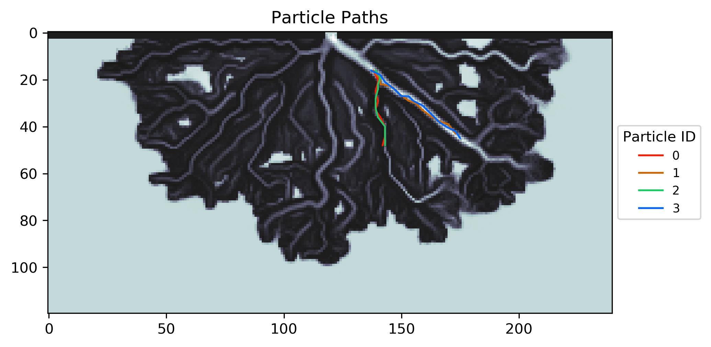

Example 7 - Drawing Particle Travel Paths (DeltaRCM)¶
In this example, we will use the particles movement simulated in Example 02 — Infiltration & Redistribution in Clay-Loam, and visualize some of the particle travel paths.
Full example script available here.
First run Example 02 — Infiltration & Redistribution in Clay-Loam, and then we can access and use the particle travel information output by that example.
Now we will apply the draw_travel_path function. In this example we are going to visualize the travel paths of the first 4 particles, indicated by the list we are providing to the draw_travel_path function. We will show every 4th iteration to visually simplify the path, controlled by interval parameter.
